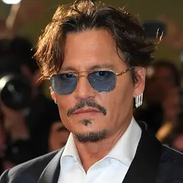

Johnney Depp

Summary
Johmney Depp is a funny and a good weird guy that you don't really take seriously. The characters he plays or acts all have a little something wrong in the head but he's really funny sometimes and most of the time when he's on screen or on set. He's pretty chill and laid back to so he's really just on of my favorite actors and my favorite one of his roles is when he plays Jack Sparrow in Pirates of the Carribian.
Funny, Chill, Relaxed
Johnney Depp's Life Events Timeline
- 1984: Made his feature film debut in A Nightmare on Elm Street
- 1987–1990: Starred on the TV series 21 Jump Street, becoming a teen idol
- 1990: Began his long-term collaboration with director Tim Burton, starting with Edward Scissorhands
- 2003: Gained worldwide fame for his role as Captain Jack Sparrow in Pirates of the Caribbean: The Curse of the Black Pearl
- 2003-2017: Continued to star in the Pirates of the Caribbean film series
- 2009: Met Amber Heard on the set of The Rum Diary
- 2015: Married Heard
- 2016: Heard filed for divorce and obtained a restraining order, alleging abuse
- 2022: The jury found in favor of Depp in the defamation lawsuit
- 2023: Depp's first film since the trial, Jeanne du Barry, was released
"This is the day you will always remember as the day you almost caught Captain Jack Sparrow."
source